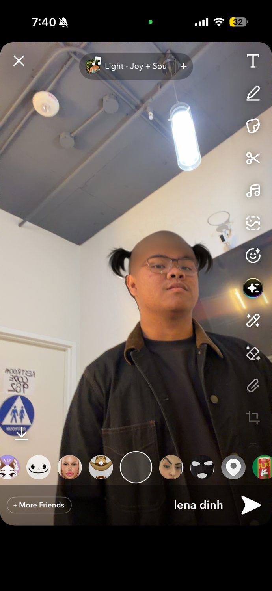

RATER_01
Lena
★ field correspondent
USC × LOS ANGELES · EST. 2026
internet café energy · global coffeehouse taste · trojan study spots
A student-made field guide to coffee, libraries, and study corners from University Park to Koreatown — rated cup by cup by Lena, Ashlyn, and Marc.
MEET THE REVIEW BOARD // USERS.HTML
Three perspectives, one very caffeinated map of LA.


THE CITY MENU // DIRECTORY